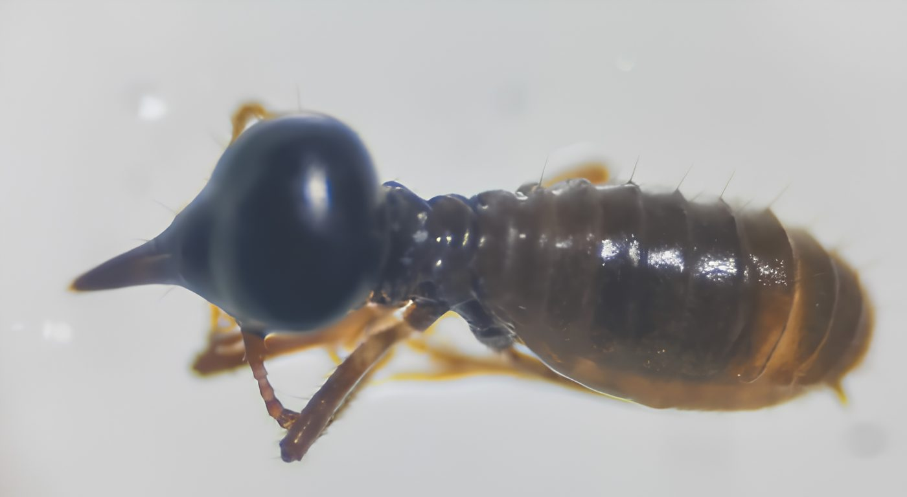
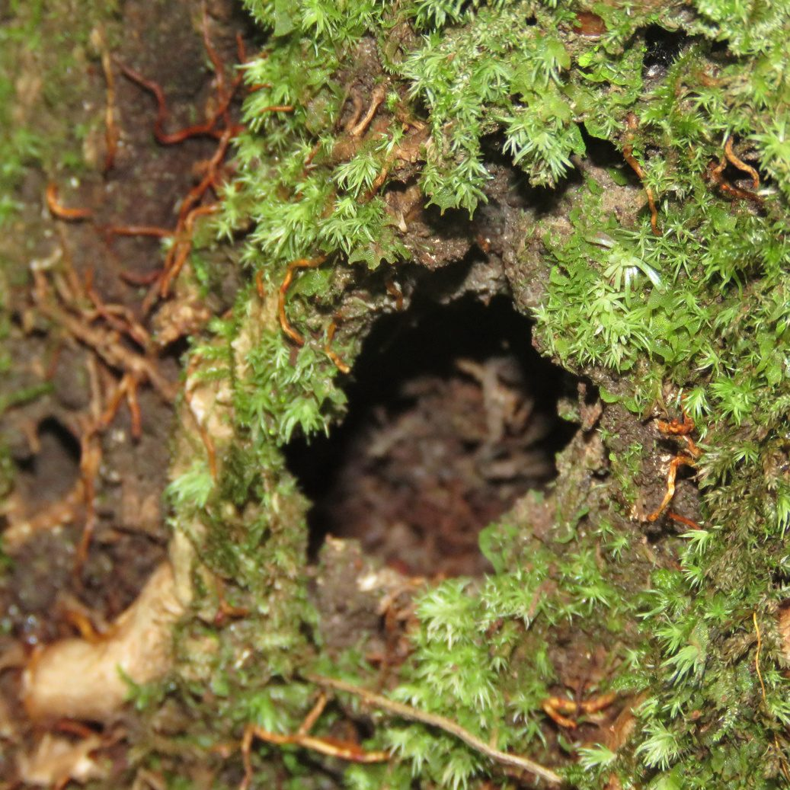
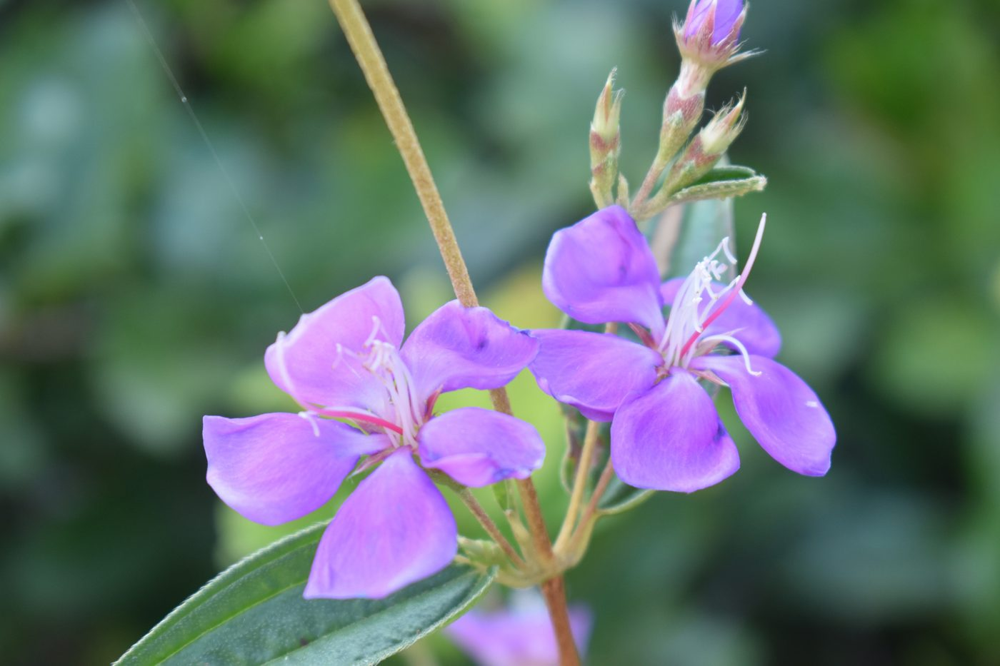
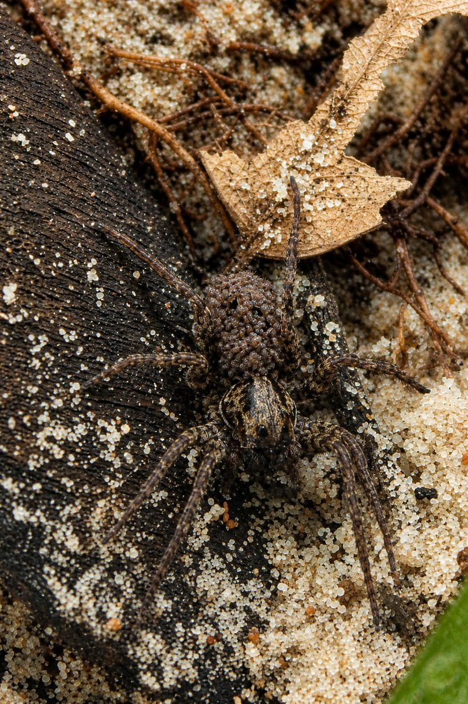
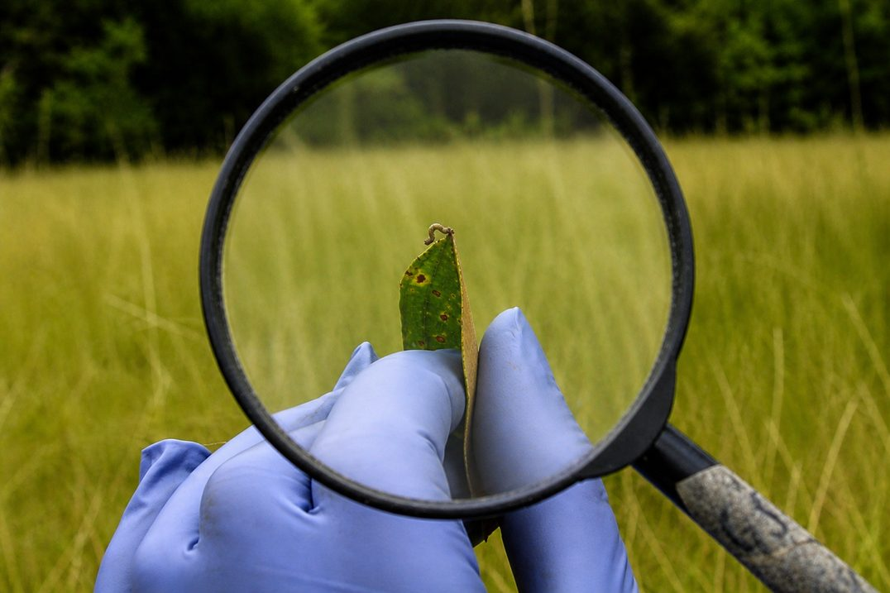
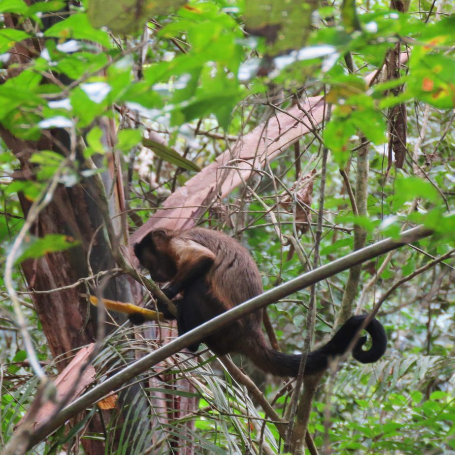

Caja de herramientas de gestión ambiental · 2026-2
Yurumí a la mano
Ocho proyectos de campo en la Reserva Natural de la Sociedad Civil Yurumí, en Puerto López (Meta), para conocer, medir y cuidar sus ecosistemas. Cada proyecto trae un video, fichas de sus especies y su ecosistema, y una nota científica.
Proyectos de campo
Cada proyecto reúne su video, sus fichas y su nota científica.

P-01 · Bosque de galería
El hogar descompuesto de las termitas
VideoFichas 3/3Nota

P-02 · Bosque de galería
Entre certezas
Líquenes y musgos en los árboles
VideoFichas 2/3Nota

P-03 · Pastizal
Entre pétalos y zumbidos
VideoFichas 3/3Nota

P-04 · Bosque de galería
Guardianas de la orilla
Variación morfológica, sexual y ecológica de Lycosidae como herramienta de apoyo a la gestión del recurso hídrico en la RNSC Yurumí, Puerto López, Meta
VideoFichas 2/3Nota

P-05 · Bosque de galería
Hojas bajo la lupa
Relación entre rasgos funcionales y herbivoría para identificar especies vegetales potencialmente resistentes al daño foliar en la RNSC Yurumí, Puerto López, Meta
VideoFichas 2/3Nota

P-06 · Bosque de galería
Un recurso entre parches
Distribución del platanillo y su importancia potencial para los monos maiceros
VideoFichas 3/3Nota
P-07
Proyecto de campo 7
En preparación
P-08
Proyecto de campo 8
En preparación
Cómo usar la caja
Para conocer un ecosistema
Entra a un proyecto, mira el video y luego lee la ficha del ecosistema y las de sus especies.
Para buscar una especie
En Fichas están todas las especies y ecosistemas, sin importar el proyecto.
Para tu visita a Yurumí
Cada ficha trae una actividad en «Qué puedes hacer» para hacer durante la caminata.